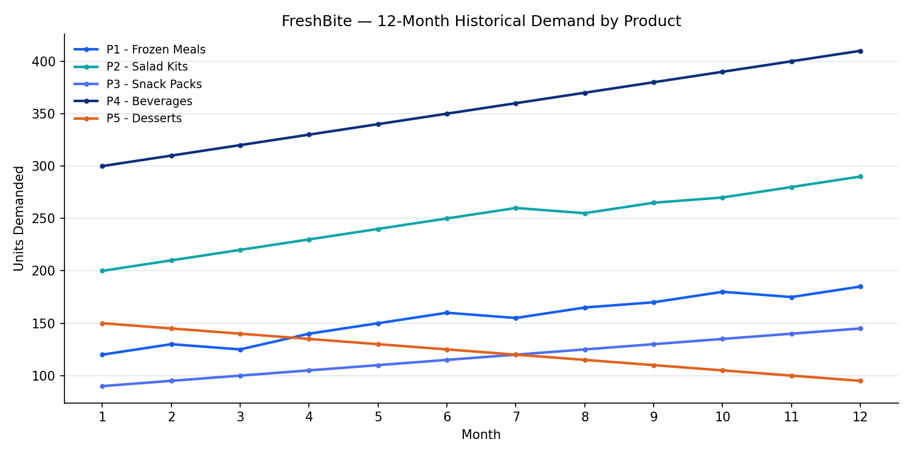
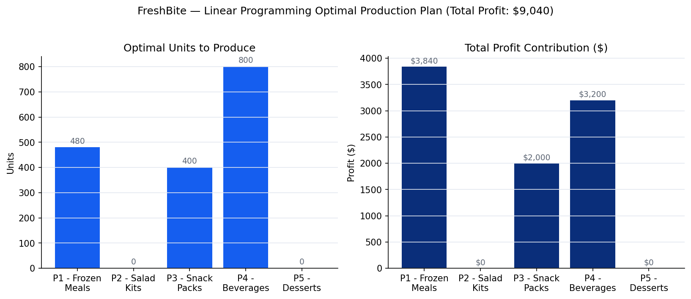
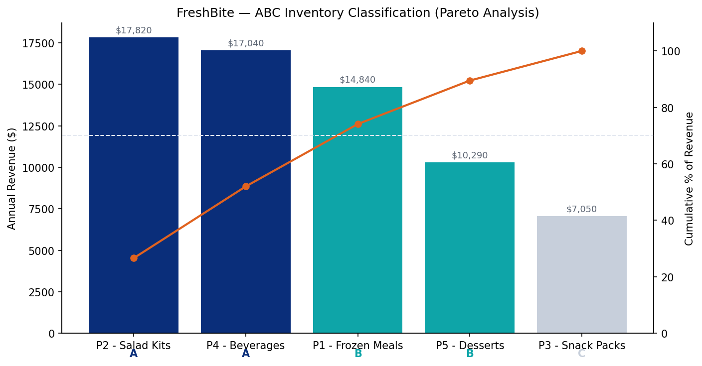

Forecasting, profit optimization, and inventory classification for a five-product food company with a constrained supply chain.
FreshBite operates a five-product portfolio — Frozen Meals, Salad Kits, Snack Packs, Beverages, and Desserts — across a supply chain constrained by labor hours, storage capacity, and budget. The task was to apply three analytical frameworks — demand forecasting, linear programming optimization, and ABC inventory classification — to identify operational inefficiencies and recommend data-driven actions to improve profitability and reliability.
Twelve months of historical demand were used to forecast Month 13 for all five SKUs, comparing a 3-month moving average (MA3) against exponential smoothing (ES, α = 0.3).

| Product | Trend | Forecast M13 | Method used |
|---|---|---|---|
| P1 — Frozen Meals | Growing | 180 | MA3 |
| P2 — Salad Kits | Growing | 280 | MA3 |
| P3 — Snack Packs | Growing | 140 | MA3 |
| P4 — Beverages | Growing | 400 | MA3 |
| P5 — Desserts | Declining | 106 | ES (α=0.3) |
Why two methods: MA3 smooths out noise and works best for products with a stable, steady growth pattern. ES reacts faster to recent changes, which matters more for Desserts — where demand has fallen 37% over 12 months and a slower-reacting average would understate how serious the decline is.
An LP model was built to maximize total profit subject to three constraints: 2,000 total labor hours, 2,000 units of storage capacity, and a $10,000 production budget. Solver determined the optimal production mix.

Key result: labor is the single binding constraint — all 2,000 hours are consumed by the optimal plan, which generates $9,040 in total profit. Salad Kits and Desserts are excluded entirely, not because they're unprofitable, but because their profit-per-labor-hour ratio loses out to the other three products competing for the same limited hours. The $10,000 budget was never fully used, meaning the business has room to invest surplus cash in expanding labor capacity rather than more raw materials.
Each product was ranked by annual revenue contribution (units sold × profit per unit) and grouped into A/B/C categories to set inventory management priorities.

| Class | Products | % of Revenue | Strategy |
|---|---|---|---|
| A | Salad Kits, Beverages | 52.0% | Tight control, real-time tracking, safety stock |
| B | Frozen Meals, Desserts | 37.4% | Periodic review, standard stock levels |
| C | Snack Packs | 10.5% | Bulk order, simplify replenishment |
| Recommendation | Rationale | Priority |
|---|---|---|
| Expand labor capacity by 200–300 hrs | Labor is the only binding constraint; unlocks an est. $1,000–1,500/month in added profit | High |
| Prioritize Class A inventory (Salad Kits, Beverages) | 52% of revenue from 2 SKUs — real-time tracking and safety stock warranted | High |
| Investigate the Desserts decline | Demand down 37% in 12 months — needs root-cause analysis before next procurement cycle | Medium |
| Improve labor efficiency for Salad Kits & Desserts | Both excluded from the optimal mix due to low profit-per-hour — process or outsourcing fix could change that | Medium |
| Simplify Snack Packs replenishment | Only 10.5% of revenue — move to single bulk-order contract | Low |
The most counter-intuitive finding was the one that mattered most: FreshBite had budget headroom the whole time — the real ceiling was labor hours. That's the value of running the numbers instead of assuming the obvious constraint (money) is the real one. Implementing these recommendations was projected to increase monthly profit by an estimated 15–20% within one quarter.